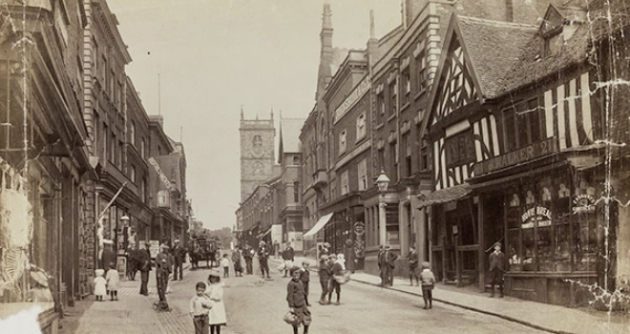
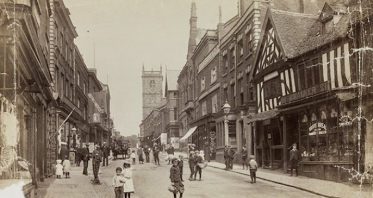

Home Town Quiz
Whitchurch, Shropshire
This quiz is about my home town. Whitchurch, Shropshire. It's a hard quiz. Good luck.
Photo of Whitchurch High Street in 1901 from the Francis Firth Collection
This quiz is about my home town. Whitchurch, Shropshire. It's a hard quiz. Good luck.
Photo of Whitchurch High Street in 1901 from the Francis Firth Collection